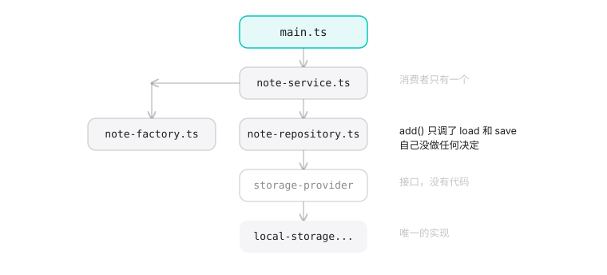
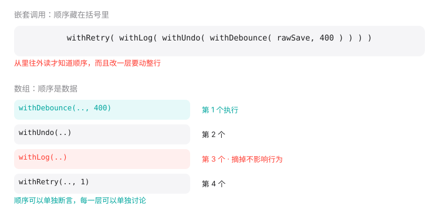
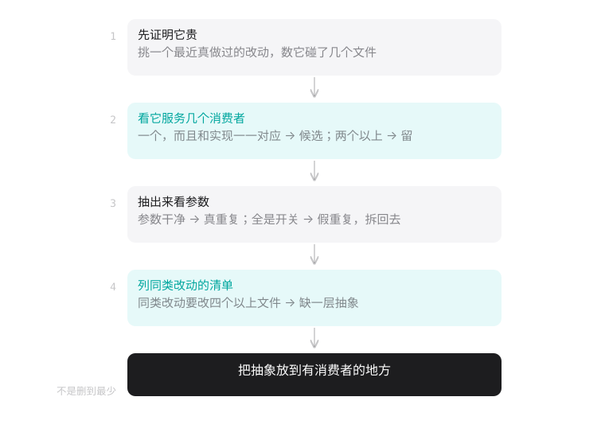
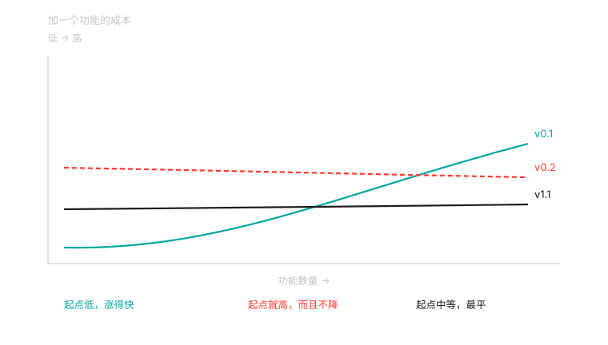

为什么还要讲设计模式
先看一段代码
我让 AI 写一个速记应用。要求很简单：打开就能写，写完自己存下来。
第一版出来了，一个文件，44 行。输入框、列表、localStorage，没有别的。
然后我说了一句几乎所有 vibe coder 都会说的话：
帮我重构一下，结构专业一点，以后好扩展。
它给了我七个文件。
src/types.ts 笔记的类型定义
src/storage/storage-provider.ts 存储接口
src/storage/local-storage-provider.ts 存储实现
src/domain/note-factory.ts 创建笔记
src/domain/note-repository.ts 读写笔记
src/domain/note-service.ts 用例编排
src/main.ts 界面
150 行，分了三层：存储、领域、界面。每个文件都写了 JSDoc，构造函数里注入依赖，还有自己的错误类型。
能跑，测试也过。
这里面有几个设计模式？
三个，如果你愿意数得更细，四个。
StorageProvider 是策略模式：把存储方式抽象成一个接口，将来换 IndexedDB 或者云端同步时上层不用改。NoteFactory 是工厂模式。NoteRepository 是仓储模式。NoteService 协调前后两者，算一层应用服务。
数对了。但数对不是重点。
哪些是必要的？
我们一个一个问。
StorageProvider 有几个实现？一个。
接口的意义在于有多个实现可以互换。现在只有一个，那这个接口唯一的作用是让 LocalStorageProvider 多写一行 implements，再让 NoteRepository 的构造函数多一个类型标注。
什么时候会有第二个？换 IndexedDB 的时候。那是什么时候？如果你答不出来，那就是现在不需要。
NoteFactory 在做什么？
create(draft: NoteDraft): Note {
return {
id: crypto.randomUUID(),
text: draft.text,
createdAt: draft.createdAt,
}
}
造一个三个字段的对象。它没有逻辑，没有分支，没有需要隔离的变化点。把它换成一个函数，或者干脆内联到调用处，代码更短也更好读。
NoteRepository.add 在做什么？
add(note: Note): void {
this.storage.save([note, ...this.storage.load()])
}
把一条笔记放到列表最前面，然后存回去。这是一行代码包了个方法名。
NoteService.create 呢？
create(draft: NoteDraft): Note {
const note = this.factory.create(draft)
this.repository.add(note)
return note
}
两行。它把「创建」和「保存」串起来，而这两件事本来就该在一起做。
四个抽象，逐个问下来，没有一个此时此刻在赚钱。
这里有个检查句，你可以直接拿去用：
看到一个只有一个实现的接口，问一句：第二个什么时候来？
答不出来，那就是还不该有。
但真正的问题不是这个
上面这些还可以争论。有人会说：「现在只有一个实现，但三个月后一定会有第二个，提前抽象省事。」
这种争论没有结果，因为它比的是两种想象。
我更在意的是另一件事。我把 v0.1 和 v0.2 逐行比了一遍，发现重构弄丢了一个东西。
v0.1 里有个函数：
function escapeHtml(s: string): string {
return s.replace(/[&<>]/g, (c) => ({ '&': '&', '<': '<', '>': '>' })[c]!)
}
渲染笔记时用它转义。你在速记里写 <script>，它老老实实显示成文字，不会被执行。
v0.2 里没有这个函数。
150 行、七个文件、三层架构，比 44 行的那版更不安全。
这不是我故意设计的对照。写 v0.2 的时候，我的注意力全在分层上，那个函数就漏掉了。AI 重构真实会发生的就是这件事：你要求「结构更专业」，得到的是层数，丢的是细节。
所以判断一次重构好不好，不能只看它加了多少抽象，还要看它有没有弄丢什么。
为什么 AI 会长成这样
这不是模型笨。
设计模式这套分类是 1994 年总结出来的，例子取的是 C++ 和 Smalltalk。在那两门语言里，把一段行为交出去，惯常写法就是包成一个对象：C++ 想传一段带状态的行为，标准做法是写一个函数对象（重载了调用运算符的类）；Smalltalk 其实早就有 block，但书里选的是对象那种表达。
第二年 Java 发布，很快成了教这门课的主流语言。类、接口、继承都是它的基本语法，那套写法也就跟着固定下来。三十年积累的教材、博客、开源项目、面试题，全是那个形状。模型从这里面学，出来的自然是那个形状。
换到 TypeScript，情况变了。函数是一等公民，模块天生就是单例，对象可以随时加方法。教材里需要四个类才能表达的东西，现在一个函数参数就够了。
同一个职责分配，两种长相。
模型的训练数据里，前一种长相多出几个数量级。所以它给你 Java 时代的形状，这不是它的错，是分布的错。
这本书教什么
三个动作。
- 认出它：这段代码里到底发生了什么？去掉语言形式之后，谁依赖谁，谁负责什么。
- 判断它：这个抽象在赚钱还是在赔钱？判断标准不是「它是不是一个设计模式」，是「它服务几个消费者，省下多少改动」。
- 拆掉它：如果你判断它不值，怎么安全地拆。什么时候不该拆，拆坏了怎么办。
这本书不替代 GoF。它假定你能写代码，只是不确定 AI 给的结构对不对。
同一个模式，三种长相
拿策略模式举例。
在 Java 里（不用看懂语法，看形状就行）：
interface ExportStrategy { String export(Data d); } // 声明「导出」是一个东西
class CsvStrategy implements ExportStrategy { ... } // 导出成 CSV
class JsonStrategy implements ExportStrategy { ... } // 导出成 JSON
class Exporter {
private ExportStrategy strategy; // 持有一个「导出」
String run(Data d) { return strategy.export(d); } // 用它
}
四段代码，做的是「把导出方式传进来」这一件事。 在 Java 里，你没法直接传一个函数，只能先把它包成对象，所以需要接口和实现类。
在 TypeScript 里，同一个职责分配：
function exportData(data: Data, format: (d: Data) => string): string {
return format(data)
}
在 Python 里：
def export_data(data, format):
return format(data)
三个版本说的是同一件事：把「怎么导出」这个决定交出去，让调用方传进来。
Java 那版之所以长，是因为语言不支持把函数直接传过去，只能先包成对象。
这个透视镜后面每一章都会用到。看到一坨类的时候，先问一句：如果这门语言支持更简单的写法，它会长什么样？
最后
读完这本书，你应该能接手一份 AI 生成的代码，说出承重的是哪几处、多余的是哪几处，并且知道从哪开始拆。
- 它不教你怎么设计大型系统：那是另一本书，而且那件事 AI 目前也帮不上什么忙。
案例的完整代码在 case/。v0.1 是那 44 行，v0.2 是那 150 行，你可以自己逐行比一遍，看看还丢了什么我没提到的。
拿到一份 AI 生成的代码，先看什么
别从代码开始读
你让 AI 写完一个功能，它给了你一堆文件。下一步该干什么？
多数人的第一反应是打开最熟悉的那个文件，或者按字母顺序从第一个读起。这两个都不好使，因为你还不知道哪些文件重要。
有一个东西比代码更早暴露真相：文件列表。
$ find src -type f -name '*.ts' | sort
src/types.ts
src/storage/local-storage-provider.ts
src/storage/storage-provider.ts
src/domain/note-factory.ts
src/domain/note-repository.ts
src/domain/note-service.ts
src/main.ts
先别打开任何一个。看这个列表能读出不少东西。
文件列表先说了一件事
它分了层。storage/ 和 domain/ 两个目录，说明作者脑子里有一个分层的模型：存储归存储，业务归业务，中间还有一层仓储。
它有一个 types.ts。通常意味着类型被集中管理，不在各文件里就近声明。
它有一个 note-factory.ts。这是最有信息量的一行——一个专门的工厂文件，说明作者认为「创建笔记」是一件独立的事，值得一个文件。
这三件事都是作者的意图，不是代码的性质。你可能同意，可能不同意，但现在你知道了他在想什么。
还有一件事可以直接数：七个文件，这个功能有几个操作？速记应用到这一步只有两个操作：列出笔记、创建笔记。两个操作、七个文件，比例不太对。这不构成罪证，但值得记下来。
从入口走一条最短路径
看完列表，打开入口——通常是 main.ts 或者 index.ts，也就是程序真正开始跑的地方。
然后挑一件事，跟着它走到底。只跟一件事，比如「我敲了一行字，它是怎么存下来的」。
在 v0.2 里，这条路是这样的：
main.ts input 事件触发，400ms 后调 service.create()
↓
note-service.ts create() 调 factory.create() 拿到 note
↓ create() 再调 repository.add(note)
note-repository.ts add() 调 storage.load() 取出现有笔记
↓ 把新笔记放最前，调 storage.save()
local-storage-provider.ts save() 写 localStorage
四个文件。
现在换一条路走。在 v0.1 里同一件事：
main.ts input 事件触发，400ms 后往数组前面塞一条
↓ 调 localStorage.setItem()
（完）
一个文件。

两条路做的事完全一样。差别只在中间要经过几个文件。
数一下你跳了几次
这是全书会反复用的一个动作：给定一个改动，数你要打开几个文件。
「笔记存下来的时候记一下时间」——在 v0.1 里改一处，在 v0.2 里要改几处？
答案是三处：在 types.ts 给 Note 加字段、在 note-factory.ts 填上它、在 main.ts 把值传进去。
三处，分布在三层里。
这个数字比「150 行 vs 44 行」更能说明问题。行数可以假装看不见，跳转次数不行——你每次都要真的打开那些文件。
这一步的产出
读完这一轮，你应该能回答三个问题：
- 这个功能有几个操作？
- 有几层？每层叫什么？
- 从一个操作的最外面到最里面，要经过几个文件？
不用评价好坏，先拿到这三个数字。
下一章说这三个数字怎么用。
抽象的三笔开销
抽象不是免费的
上一章量了三个数：操作数、层数、要打开几个文件。这一章说它们能换来什么，以及要付出什么。
先说结论：抽象的开销不在代码行数上。
v0.1 是 44 行，v0.2 是 150 行。行数差了 3.4 倍，但这个倍数本身不说明问题——多出来那 106 行你既不用背，读的时候也可以跳过去。真正要付的代价在别处。
真正影响你的是另外三样。
第一笔：跳转
要理解一段逻辑，你得在文件之间移动。每一次移动都有成本——打开、定位、记住刚才看到的东西。
在 v0.2 里回答「笔记是怎么存的」，要打开四个文件。在 v0.1 里，一个。
跳转次数是可以数的，也是可以直接比较的。这是三笔开销里最实在的一笔。
没有一条通用上限，但有个体感信号：你每次改这个功能之前会不会先犹豫一下。犹豫说明你记不住它在哪几层——那本身就是成本。
第二笔：改动面
「加一个字段」在 v0.1 里改一处，在 v0.2 里改三处。
抽象在这里做了一笔交换：它把某些改动集中了，把另一些改动分散了。
- 换存储方式（换一个同样是同步的键值存储）：v0.2 只改一个文件，v0.1 要改散落各处的
localStorage调用 - 加一个笔记字段：v0.2 要经手三个文件，v0.1 只改一处
所以「抽象让改动更容易」这句话缺了主语。 它让哪一类改动更容易？
判断方法很直接：列出你未来三个月最可能做的五个改动，每个数一遍要开几个文件。如果抽象的收益都在你永远不会做的改动上，那它就是在收你的税。
第三笔：读代码时的默认假设
这笔最隐蔽。
v0.1 里，localStorage.setItem() 就写在那儿。你一眼看到它在存东西，也一眼看到它是同步的。
v0.2 里，你看到的是 this.storage.save(notes)，声明为返回 void。你必须去读实现，才知道它是同步的。
第 04 章会讲一个换 IndexedDB 失败的故事，根子就在这儿：接口没告诉你任何实现细节，于是你以为换实现很容易——实际上接口悄悄固化了同步这个前提。
抽象隐藏的东西不是不存在，只是搬到了你需要的时候才去找。
三笔加起来
| v0.1 | v0.2 | |
|---|---|---|
| 理解「笔记怎么存的」要打开几个文件 | 1 | 4 |
| 加一个字段要改几个文件 | 1 | 3 |
| 换存储方式（约束相同） | 多 | 1 |
| 隐藏的前提 | 存储永远可写、存量内容永远合法 | 存储是同步的 |
看最后一行。这里要说句公道话：v0.1 也有隐藏前提，而且更裸。
（表里「换存储」那一格说的都是约束不变的情况。如果新实现和旧实现的约束不同（比如同步换异步），v0.2 那个接口就废了，要改四处。这是第 04 章和最后一张表的事。）
它顶层直接 JSON.parse(localStorage.getItem(KEY) ?? '[]')，setItem 也没包 try。它的前提是「存储永远可写、存进去的内容永远合法」——隐私模式或者数据被改坏的时候，它直接崩。
两个版本的差别不是「有没有前提」，是前提写在哪：v0.1 的前提就写在那一行代码里，你读到就看见了；v0.2 的前提藏在接口的签名里（同步），要对着第二个实现才看得出来。
这也是为什么第 00 章那个 44 行的版本不是「不专业」，而是它把复杂度放对了地方：两个操作的速记应用，不需要为「将来可能换存储」预付成本。
一笔不能忽略的账
还有第四笔，不属于抽象本身，但每次重构都要算：重构的过程中弄丢了什么。
v0.2 比 v0.1 少了 HTML 转义。这是从 44 行变成 150 行的过程中掉出去的，而且没有任何地方会提醒你。
所以每次接受一次重构，做一件事：把新旧两版并排打开，不只看加了什么，也看少了什么。
多出来的抽象是看得见的，丢掉的细节是看不见的。你只会注意到前者。
把一段陌生代码读成一张图
不画 UML
几乎所有讲设计模式的书都会给你看类图：空心三角表示继承，空心菱形表示聚合，实心菱形表示组合。
这一章不画那个。不是因为它错，是因为它需要你先接受一整套记号，才看得懂它想说什么。而你现在的问题是「这段代码在干什么」，不是「这段代码符合哪种关系」。
只画两种线：
- 实线箭头：谁调用谁
- 虚线：谁持有谁
就这么多。
拿速记应用画一张
从「保存一条笔记」这一件事出发，画出 v0.2：
main.ts
│
│ 调 service.create()
▼
note-service.ts ──────┐
│ │ 持有
│ 调 factory.create()│
▼ ▼
note-factory.ts note-repository.ts
│
│ 持有
▼
storage-provider.ts
▲
│ 实现
local-storage-provider.ts

画完了。注意这张图只画了「存一条笔记」这一条路。 NoteRepository 和 NoteService 各有两个方法，另一个（读）走的是另一条分支，图里省略了——下面判断哪些节点是直通的时候，要对两个方法都看一遍。
这张图里有两种节点。main.ts、note-service.ts、note-repository.ts、local-storage-provider.ts 在调用链上；note-factory.ts 挂在旁边，是被持有的，只被调用一次。
找出「直通」的节点
现在做一件很简单的事：把每个节点做的事情，和它下游节点做的事情对比。
NoteRepository.add：
add(note: Note): void {
this.storage.save([note, ...this.storage.load()])
}
它调了 storage 的 load 和 save。没有别的。它自己没做任何决定。
NoteService.create：
create(draft: NoteDraft): Note {
const note = this.factory.create(draft)
this.repository.add(note)
return note
}
调了 factory.create 和 repository.add。也没有别的。
NoteFactory.create：
create(draft: NoteDraft): Note {
return { id: crypto.randomUUID(), text: draft.text, createdAt: draft.createdAt }
}
这个是终点，它真的做了一件事（生成 id）。但这件事只有一行。
三个节点，没有一个在做判断。 它们都在转发。
一个可操作的判断
如果去掉这个节点，调用方把它的下游直接调一遍，代码会不会变短、变清楚？
会 → 它是直通的，可以考虑去掉 不会 → 它在做什么事，留着
拿 NoteRepository 试：去掉它，NoteService.create 直接调 this.storage.save([...])。少一层，短一行，而且读代码的人少跳一次。
拿 NoteFactory 试：去掉它，NoteService 里写 crypto.randomUUID()——这就不好说了。生成 id 这件事放到哪里都行，但「谁来负责造一条完整的笔记」是一个可以讨论的边界。
注意这个判断没有产生一个统一答案。两个节点，一个该删一个可以留，理由不一样。这是正常的——画图不是为了得到一个分数，是为了让你能一个节点一个节点地讨论。
但有一类节点不能这样判断
storage-provider.ts 在图上是个接口，它没有代码，只有签名。
对接口不能问「它在做什么」，要问第 00 章那句检查句：第二个实现什么时候来。
以及更重要的：它给使用方留下的是什么样的假设。第 00 章那个接口只声明了同步方法，于是「存储是同步的」这个假设被固化进了整条调用链。
接口在图上不占地方，但它决定了所有实线箭头的形状。 这是画图时最容易忽略的一类节点。
这张图拿来干什么
三个用法。
- 改动前画一遍：你打算加一个功能，先画一遍它会挂在哪。如果你想不出它该挂在哪个节点上，说明这个结构也许不支持你要加的东西——这是一个很有用的预警。
- 争论时画一遍：「这个类该不该拆」这种争论，在文字里可以吵一整天，画成图之后通常几分钟就清楚了，因为虚线连到哪儿是看得见的。
- 接手陌生代码时画一遍：这是最有价值的用法。你不需要读懂每个文件，只需要画出入和出——画的过程中你会自己发现哪几个文件是必须读的，哪几个可以先跳过。
不用画得好看
上面那张图是用空格和竖线对齐出来的，歪歪扭扭也没关系。
关键是节点和边，不是排版。你可以画在纸上、画在白板上、写在代码注释里。这个动作的价值在于迫使你把「谁调谁」这件事显式写下来——写的过程里，直通的节点会自己浮出来。
这个接口只有一个实现
我为它准备了这么久，它没帮上忙
第 00 章那份 v0.2 里有一个接口（下面是节选，去掉了注释）：
export interface StorageProvider {
load(): Note[]
save(notes: readonly Note[]): void
}
完整版里每个方法上都写了注释，接口自己的注释写着：把存储实现挡在接口之后，将来换 IndexedDB 或远端同步时，上层不需要改动。
它的设计意图就是等这一天。
后来我真的去加 IndexedDB。做法很自然：把 LocalStorageProvider 复制一份，改名，把两个方法体换掉。
export class IndexedDbProvider implements StorageProvider {
load(): Note[] {
const request = indexedDB.open('jot', 1)
let notes: Note[] = []
request.onsuccess = () => {
const tx = request.result.transaction('notes', 'readonly')
const get = tx.objectStore('notes').getAll()
get.onsuccess = () => { notes = get.result as Note[] }
}
return notes
}
// save 同理
}
它通过了类型检查。
然后打开页面，「0 条」。
因为 load() 在 onsuccess 跑之前就返回了。那个 let notes = [] 是函数内的局部变量，回调把它填上时，函数早就返回了。调用方永远只拿到空数组。
注意这件事的性质：它不报错。 不是抛异常，不是类型错误，是安安静静地返回一个空列表。应用看起来在正常工作，只是没有数据。
我换实现失败，不是因为实现写得不好，是因为接口从一开始就没打算让我换。它是照着 localStorage 抄的。
这个接口唯一真正做的事，是把 localStorage 的同步特性固化了下来。 而且它固化得很成功：违反这个前提的实现不会被拦住，只会静默出错。
它抄了什么
把两个类型并排看：
interface StorageProvider { class LocalStorageProvider {
load(): Note[] load(): Note[] { ... }
save(notes): void save(notes): void { ... }
} }
一模一样。
这不是抽象，是改名。接口里没有任何一样东西是使用方提出的。它就是把实现类的方法签名誊了一遍，前面加了个 interface 关键字。
一份誊本当然挡不住变化。它的形状来自被誊写的那个东西，所以被誊写的东西一变，誊本立刻失效。
如果由使用方来定，它会不一样
StorageProvider 的消费者只有一个：NoteRepository。而 NoteRepository 真正需要的是什么？
它需要「拿到所有笔记」，需要「存下一条笔记」。它不需要知道存储是同步的，也不需要知道一次存几条。
由使用方定义的话，接口应该是这样：
export interface NoteStore {
/** 读出全部笔记，最近追加的在前。 */
all(): Promise<Note[]>
/** 追加一条。 */
append(note: Note): Promise<void>
}
三个区别：
- 异步。这是使用方唯一能接受的形状——它没法假设底层一定同步
- 语义是「追加一条」，不是「覆盖全部」。后者是 localStorage 的实现细节泄漏到了接口上
all()而不是load()。前者描述使用方的需要，后者描述实现的动作
按这个接口写，localStorage 和 IndexedDB 都能实现，NoteRepository 一行不用改。
同一件事，两个接口。前一个挡不住变化，后一个能。
为什么会先有接口
回头看 v0.2 是怎么产生的：AI 先写好了一个能跑的 LocalStorageProvider，然后从它身上抽了个接口出来。
从实现往上抽，抽到的永远是实现的形状。
正确的顺序是反的：先看有几个人要用它、每个人需要什么，写出那个最小的公共面，再去实现。这时候接口是窄的、稳的，因为它描述的是需求，不是能力。
实操上有个简单的判断法：
把接口的方法名和实现类的方法名并排列出来。
如果一一对应，那它就是誊本，不是抽象。
StorageProvider 和 LocalStorageProvider 就是这样：load 对 load，save 对 save。而 NoteStore 和两个实现都不对应——它比实现窄。
那什么时候该有它
回到第 00 章那句检查句：看到一个只有一个实现的接口，问一句「第二个什么时候来」。
现在可以补上后半句了。如果第二个会来，还要看它来了之后接口能不能不动。
- 第二个实现只是换了个存储介质（localStorage → sessionStorage），接口不用动 → 这个接口有意义
- 第二个实现和第一个的约束完全不同（同步 → 异步），接口必须改 → 说明你抽的是第一个实现的形状，不是它们的共同点
还有一种情况是第二个实现永远不来，但消费者有两个。比如笔记既要在列表里读，又要在导出功能里读，两边需要的形状不一样。这时候接口的作用不是换实现，是给两个使用方一个共同的约定。
这也是它唯一能赚钱的方式：接口服务的是使用方，不是实现方。
谬误与陷阱
只有一个实现，说明设计过度？不一定。要看这个接口是不是比实现窄。窄的接口即使只有一个实现也在赚钱，因为它约束了使用方的假设。誊本式的接口，就算你有五个实现也没用。
有了接口，将来换实现就不用改上层？只有当接口描述的是需求时才成立。描述能力的接口，换个约束不同的实现就散架。判断方法：把第二个实现的约束列出来，看接口里的方法签名还成立不成立。
接口越多，代码越灵活？接口的成本不在写它的那几行，在于每一个读者都要多跳一层才能看到实际发生的事。第 00 章那个 150 行的版本里，光是为了看「笔记怎么存的」，就要穿过 NoteService、NoteRepository、StorageProvider 三层。
传函数，还是传对象
我想给笔记加一点格式
笔记都是纯文本。我想让它支持两种标记：加粗 和 `行内代码`。
改动很小。渲染的时候把标记换成标签就行。
我把需求丢给 AI，它给了我三个文件。
// renderer.ts
export interface Renderer {
render(text: string): string
}
// plain-renderer.ts
export class PlainRenderer implements Renderer {
render(text: string): string { /* 只转义 */ }
}
// markdown-renderer.ts
export class MarkdownRenderer implements Renderer {
render(text: string): string { /* 转义 + 换标记 */ }
}
能用。但盯着看一会儿，会发现一件很直白的事。
一个只有 render 方法的接口，就是一个函数类型
Renderer 接口里只有一个方法。它没有属性，没有状态，没有第二个操作。
那么「一个 Renderer」和「一个接收字符串、返回字符串的函数」，能表达的东西完全一样。
TypeScript 里这两句在日常用法下可以互换：
interface Renderer { render(text: string): string }
type Render = (text: string) => string
严格说它们不是同一样东西（方法签名和属性签名的参数检查方向不完全一样，接口还能声明合并），但对「该用哪个」这个判断没有影响。后者短一半，而且不用为它发明一个名词。
同一个功能，用函数写是十八行、一个文件：
export type Render = (text: string) => string
const escape = (s: string): string => s.replace(/[&<>]/g, /* ... */)
export const renderPlain: Render = (text) => escape(text)
export const renderMarkdown: Render = (text) =>
escape(text)
.replace(/\*\*(.+?)\*\*/g, '<b>$1</b>')
.replace(/`(.+?)`/g, '<code>$1</code>')
三个文件变成了一个文件。省下的不是那五行代码，是读者要跳三次才能看完这件事。
但先别急着删
上面这个结论下得太快了。它成立有一个前提：这个东西没有配置。
如果渲染要带选项呢？比如我想让行内代码高亮成别的颜色，或者关掉加粗解析。
带配置的函数是这样：
export function createRenderer(options: {
bold: boolean
inlineCode: boolean
}): Render {
return (text) => {
let html = escape(text)
if (options.bold) html = html.replace(/\*\*(.+?)\*\*/g, '<b>$1</b>')
if (options.inlineCode) html = html.replace(/`(.+?)`/g, '<code>$1</code>')
return html
}
}
createRenderer({ bold: true, inlineCode: false }) 返回一个 Render。配置被闭包接住了，使用方拿到的还是一个普通函数。
这是对象和函数之间那个中间位置：函数工厂。
它比对象轻（不用 new，不用类），又比裸函数强（能带配置）。而且使用方那边完全看不出区别——render(text) 就是 render(text)，它不关心这个函数是写死的还是造出来的。
那什么时候真的需要对象
四种情况，只有这四种。
- 需要多个操作：一个东西如果有
render和measure和clear，函数表达不了。哦，能表达，但你要传三个函数，而它们本该一起走。 - 需要生命周期：比如渲染器内部开了个 Web Worker，用完要
dispose。函数没有地方挂dispose。 - 需要身份：你想比较「是不是同一个渲染器」，或者把它当 Map 的键。两个函数即使实现完全一样也不相等。
- 需要继承做特化：这个理由最常见，也最可疑。如果你的类层次只有一层，通常是函数工厂就够了。
反过来，只有一种方法、没有生命周期、不需要身份的东西，用类就是在给自己加一层。
怎么选
留一个可以当场用的判断：
这个东西有几个操作？
一个，而且不带配置 → 用一个函数 一个，但带配置 → 用函数工厂 两个以上，或者要清理 → 用对象
再补一句：只有当对象的多个操作共享状态时，它才真的比一组函数强。 否则那不过是一堆函数被 this 捆在了一起。
谬误与陷阱
类更面向对象、更专业？面向对象不是目的。MarkdownRenderer 那个类里没有一个字段，实例之间没有任何区别，创建一百个和创建一个效果一样。这种类没有承载对象该承载的东西。
函数不好测试？恰好相反。纯函数是最好测的：给输入，看输出，不用构造实例、不用管状态。renderMarkdown('a') 一行就是一个测试用例。
用函数以后不好换成类？反过来才对。从函数换成函数工厂，调用方看不见；从类换成函数，调用方要改。先用轻的，重的那一步随时可以加。
接口让实现可以替换？如果接口只有一个方法，那个「接口」本来就是一个函数类型签名。第 04 章讲过，誊本式的接口挡不住变化——一个只有单方法的接口，连誊本都算不上，它就是函数类型绕了个远路。
if-else 越写越长
从两种语法到六种
渲染器原本只支持加粗和行内代码。后来我想多加几种：删除线、链接、引用、列表，每种都能单独开关。
很自然地，就成了这样：
export function render(text: string, options: RenderOptions): string {
let html = escape(text)
if (options.inlineCode) html = html.replace(/`(.+?)`/g, '<code>$1</code>')
if (options.bold) html = html.replace(/\*\*(.+?)\*\*/g, '<b>$1</b>')
if (options.strike) html = html.replace(/~~(.+?)~~/g, '<s>$1</s>')
if (options.link) html = html.replace(/\[(.+?)\]\((.+?)\)/g, '<a href="$2">$1</a>')
if (options.quote) html = html.replace(/^> (.+)$/gm, '<blockquote>$1</blockquote>')
if (options.list) html = html.replace(/^- (.+)$/gm, '<li>$1</li>')
return html
}
六行 if，每行一个语法。它能跑，也不难读。问题不在这儿。
两个问题
一、顺序是隐含的。
这六行是有顺序的。顺序平时不显形，但它是行为的一部分。
我把六条规则做了全排列（720 种），拿正常文本跑：输出完全一致。六条规则各自匹配的标记互不重叠，井水不犯河水。
换成交错的标记就不一样了。比如 [**~~](](~~**) 这种半截标记，不同顺序能给出四种不同的结果。正常写笔记不会写出这种东西，但别人写出来的东西不一定正常。
问题在于这个顺序只能通过「从上往下读」才知道。你想在中间插一条新规则，没有任何东西告诉你应该插在第几行。
二、开关的名字和行为分在两处。
RenderOptions 里声明一次 bold?: boolean，实现里再写一次 if (options.bold)。
这两处必须对得上。加了字段忘了写 if，语法永远不会生效；删了 if 忘了删字段，接口上还留着一个不存在的开关。编译器不会提醒你，因为两边都是合法的。
我把这段丢给 AI，它给了什么
为了不凭印象说话，我真的跑了一次：独立开一个会话，只给 branches.ts 和一句「分支太多了，帮我整理一下」，不提这本书、不引导方向。
它给的正是表驱动：六条规则写成一张表，RenderOptions 从表的 name 推导出来，引擎里只剩「开没开」一个分支。和这一节的结论一样。
但它给的不止这些。产出是四个文件、169 行：
rules.ts 39 行 六条规则一张表 + 由表推导出的开关类型
render.ts 23 行 转义 + 渲染管线
index.ts 12 行 公开入口
parity.ts 95 行 和原实现逐字节对拍的脚本（2594 组输入）
核心那两部分加起来 62 行。剩下 107 行是入口文件和一个相当认真的验证脚本。
这个答案不能说错。parity.ts 甚至是好习惯——重构一个输出敏感的纯函数，本来就该对拍。
但它引出了一件更值得讲的事：同一段代码，AI 给的方案是对的，你要是照抄，就多背了 107 行。 那 107 行不是垃圾，是「它替你做了主张」：它主张这个渲染器值得一个对拍脚本、值得一个独立的公开入口。
这些主张对不对，取决于你的项目。 如果这个渲染器只有你一个人用、只有六个语法，那 2594 组输入的对拍就是过度投资；如果它是个库，那是对的做法。
原件放在 case/ai-answers/branch-refactor/，你可以自己看它多做了什么。
分支变成数据
它给的那个方向是对的：把六个 if 变成一个数组。 具体长这样：
export interface Rule {
readonly name: keyof RenderOptions
readonly apply: (html: string) => string
}
export const rules: readonly Rule[] = [
{ name: 'inlineCode', apply: (h) => h.replace(/`(.+?)`/g, '<code>$1</code>') },
{ name: 'bold', apply: (h) => h.replace(/\*\*(.+?)\*\*/g, '<b>$1</b>') },
{ name: 'strike', apply: (h) => h.replace(/~~(.+?)~~/g, '<s>$1</s>') },
{ name: 'link', apply: (h) => h.replace(/\[(.+?)\]\((.+?)\)/g, '<a href="$2">$1</a>') },
{ name: 'quote', apply: (h) => h.replace(/^> (.+)$/gm, '<blockquote>$1</blockquote>') },
{ name: 'list', apply: (h) => h.replace(/^- (.+)$/gm, '<li>$1</li>') },
]
export function renderWith(text: string, options: RenderOptions): string {
return rules
.filter((rule) => options[rule.name])
.reduce((html, rule) => rule.apply(html), escape(text))
}
上面这两段是修之前的样子。 后面那节会讲在它们身上发现了什么——引用规则根本没生效，链接还有一个属性注入的口子。

这一版的核心是 62 行的那个量级（一份规则表加一个渲染函数），输出和它逐字节一致。案例里有对照脚本，你可以自己验一遍：
cd case && npm install && npm run verify:v0.4
它拿八个样例乘六组开关跑两遍，比对结果。八乘六全部相同，才说明这两份是同一个东西。上面那两个问题也因此消失了。
- 顺序变成数据：数组的顺序就是执行顺序。想插一条新规则，插在数组的哪一行就是第几个执行，看一眼就知道。还可以为这个顺序单独写断言。
- 名字和行为绑在一起：每条规则是一个对象字面量，
name和apply在同一行里。它们不可能对不上——要对不上就得先把它俩拆开。
但「一致」不等于「对」
写完那个对拍脚本之后，我又看了一遍它报的「输出全部一致」，觉得哪里不对。
两版一致，只能证明它们做的是同一件事，证明不了那件事是对的。
去查了一下，果然：规则表里「引用」那条从来没生效过。render 先转义（把 > 变成 >），再套规则，而引用规则的正则要求行首是字面的 >。两个版本写的是同一个错，所以对拍一路绿灯。
修法是把正则改成匹配转义后的形式：
{ name: 'quote', apply: (h) => h.replace(/^> (.+)$/gm, '<blockquote>$1</blockquote>') }
顺手给对拍脚本加了一组「期望输出」断言——不是比对两份实现，是拿七个输入直接对答案：
const expected = [
['**粗**', '<b>粗</b>'],
['> 引用', '<blockquote>引用</blockquote>'],
['<script>', '<script>'],
// ...
]
现在把引用规则改回错的那种写法，脚本会报「期望输出不符」，而不是继续绿灯。
这个教训比那一行正则值钱：对拍能防住「改坏了」，防不住「一开始就写错了」。要防后者，得有一份独立于实现之外的期望值。
这套改法有个名字叫表驱动（table-driven），但名字不重要。要记住的是这个动作：
当一个 if-else 链的每个分支长得一模一样、只是数据不同的时候，它就该变成一个数组。
那什么时候该用类
和第 05 章一样，只有那四种：需要多个操作、需要生命周期、需要身份、真的需要特化。
六条正则替换，一条都不占。
反过来说，如果一个 if 的每个分支做的事情结构不同——有的要发请求，有的要读文件，有的要递归——那它们本来就该是分开的东西，用类或者用函数都行。判断依据是「分支长得像不像」，不是「分支有几个」。
谬误与陷阱
分支多了就该上策略模式？分支多不多不是判据，分支同不同构才是。六个结构一样的分支，数组就够了；三个结构完全不同的分支，三个函数就够了。两者都不需要类。
把每个分支抽成一个类，将来好扩展？数一下扩展成本。数组版本加一种语法是加一个数组元素；类版本加一种语法是新加一个文件、改注册器、确认插入位置。一个变便宜了，一个变贵了。
表驱动不好调试？恰恰相反。数组可以打印、可以切片、可以在测试里换个顺序跑。六个 if 你只能一行行读，而且 console.log 要插六次。
反正能跑就行？这六行确实能跑。问题不在今天，在你三个月后想加第七种语法、又记不清该插在第几行的时候。
构造函数参数越来越多
十二个参数
编辑器需要配置之后，构造函数变成了这样。
const editor = new Editor(
storage, // 存储
renderer, // 渲染
'dark', // 主题
16, // 字号
1.72, // 行距
'auto', // 内容宽度
400, // 自动保存延迟（毫秒）
5000, // 最大笔记数
true, // 语法：加粗
true, // 语法：行内代码
false, // 语法：删除线
true, // 语法：列表
)
十二个位置参数。
它还能用，是因为这个调用只写一次。但如果测试里要造十个不同配置的编辑器呢？你会写出十行这样的东西，每一行都要数着逗号找位置：
new Editor(storage, renderer, 'light', 14, 1.6, 680, 800, 1000, false, true, false, true)
那一串 'light', 14, 1.6, 680, 800, 1000 里，谁是毫秒谁是条数，读的人只能去数。
我把这段丢给 AI，它给了什么
和第 06 章一样，我真的跑了一次：独立会话，只给那段十二个参数的调用和一句「这个构造函数参数太多了，帮我整理一下，以后好扩展」。
它没有用建造者。它做的是把参数收进一个 options 对象，按四组分开：
interface EditorOptions {
readonly storage: EditorStorage
readonly renderer: Renderer
readonly registry?: ThemeRegistry
readonly appearance?: AppearanceOptions // 主题、字号、行距、宽度
readonly behavior?: BehaviorOptions // 自动保存延迟、笔记上限
readonly syntax?: MarkdownSyntaxInput
}
方向和后面要讲的一样：分组，而不是链式调用。
产出是 9 个 TypeScript 文件、1186 行。
types.ts 对外类型
defaults.ts 默认值 + 归一化 + 老签名翻译
theme.ts 主题注册表
markdown-syntax.ts 语法开关、预设、插件
storage.ts 存储契约 + MemoryStorage
renderer.ts 渲染契约 + DomRenderer
editor.ts Editor 本体
index.ts 公开入口 + createEditor
example.ts 新旧调用方对照
起点是十二个参数，终点是九个文件。
它多做的每一件事都能说清理由：主题从字符串变成可注册资源（方便加主题）、老签名保留成重载（老调用方不用改）、归一化集中在 defaults.ts（update() 能只传一组）。这些都是真问题。
但它们是你此刻的问题吗？
原件在 case/ai-answers/editor-refactor/。你可以对着那 1186 行问一遍：这里面哪几行，是今天就用得上的？
方向对，不代表规模对。 这两件事要分开判——第 06 章那个答案也是这样。
分组是对的，但它没回答为什么
分组之后调用处好读了。可十二个还是十二个，而且现在多了一层嵌套。
值得停下来问一句：这个东西为什么要这么多配置？
回头看那十二个。前两个是依赖（存储、渲染器），后面十个全是外观和行为偏好。而这十个东西有一个共同性质：它们可以被存下来、被改、被重置。
主题、字号、行距、宽度，是一组——它们决定长什么样。 自动保存延迟、最大笔记数、语法开关，是另一组——它们决定怎么工作。
参数一多，通常说明这些东西本来就有独立的存在理由，只是被塞进了构造函数。
按「什么时候一起变」分组
分组不必凭感觉，有一个可操作的判据：
把参数两两拿出来问：这两个会不会一起改？
会 → 它们是一个东西 不会 → 它们是两个
主题和字号会一起改（换个深色主题通常也跟着调字号），归一组。
主题和最大笔记数不会一起改，它们是两组。
分完之后：
const editor = new Editor({
storage,
renderer,
appearance: { theme: 'dark', fontSize: 16, lineHeight: 1.72, width: 'auto' },
behavior: { autoSaveDelay: 400, maxNotes: 5000, syntax: { bold: true, inlineCode: true } },
})
四个参数，其中两个是依赖，两个是配置。
好处不只是好读。appearance 现在是一个可以整个存进 localStorage、整个取出来、整个重置的值。它有自己的生命周期了。
如果它还是一堆散参数，你想做「恢复默认外观」，得写四行分别赋值；现在是一行。
这其实是在划边界
分组的动作，本质上是在给那些字段找一个共同的名字。而找名字的过程会逼出真问题。
比如你把 autoSaveDelay 和 maxNotes 放在一组，叫它 behavior。过了一会儿你会发现，这两个东西从来没一起用过——一个影响输入体验，一个影响存储。那它们其实该分到两组去，behavior 这个名字太宽了。
能起出一个准确名字的分组，就是一个真的边界；起不出名字，说明你分错了。
十二个参数之所以难受，往往不是因为多，是因为它们还没有被组织过——作者每次加一个需求就往后接一个参数，从来没回头看过它们之间的关系。
谬误与陷阱
参数多了就用建造者？建造者解决的是「可选参数难以表达」，而 TypeScript 的对象参数已经解决了这件事。建造者在这里多出来的是一层链式 API 和一个 .build()，没有换来表达力。
用对象参数会丢失顺序信息？顺序信息在这里没有价值。十二个位置参数里，顺序唯一的作用是让你能少打几个字，代价是每次调用都要查一遍顺序。
把参数分组只是为了好看？不是。分组之后那个对象可以被整体传递、存储、比较、重置。散参数做不到其中任何一件。
一次分好组就不用管了？分组会过期。每加一个新配置，回头看一眼它属于哪一组；如果哪一组开始装不下，那是边界该重划的信号。
包了一层又一层
保存这件事长了四层
保存原本只有一行。后来陆续加了四件事，每一件单看都该加。
- 防抖：打字时不能每敲一个键就写一次盘，要等停手。
- 撤销：删掉一条笔记要能撤回，所以每次改动前先存一份快照。
- 日志：想知道一天到底写了几次盘，出问题时也好看。
- 错误重试：localStorage 在隐私模式下会抛异常，偶尔抽风要重试一次。
四件事各自看起来都该加，加完之后调用变成这样：
const save = withRetry(withLog(withUndo(withDebounce(rawSave, 400))))
一行，四个括号，从里往外读才知道顺序。
先别急着说这是过度设计
前面几章一直在删东西，这一章不一样。这四层每一层都在做实事。
比较一下第 04 章那个誊本式的接口：StorageProvider 和 LocalStorageProvider 方法一一对应，它没做任何事，只是把签名抄了一遍。
而这四个包装函数，每一个都改变了函数的行为：withDebounce 改变了什么时候执行，withUndo 改变了执行前后发生什么，withRetry 改变了失败时的处理。
它们不是转发，是真正的改变。
它们还有一个共同的性质：每个都可以单独关掉。不想要日志就去掉 withLog，其他三层不受影响。这是包装最值钱的地方——它把四件正交的事情拆成了四块。
所以这章的问题不是「要不要包装」，是两个更具体的问题：顺序怎么表达，和哪一层其实不该有。
顺序是藏起来的
四个括号嵌套，执行顺序是从里往外：先防抖，再撤销，再日志，最后重试。
这个顺序有实际影响，而且有几个地方反直觉：
- 重试在最外层，意味着一次重试会把撤销快照也重做一遍
- 日志在重试里面，意味着重试的那几次不会各记一条日志
这两个行为对不对，取决于你想要什么。问题是它们现在谁都看不出来，要读四个函数的实现才能推。
和第 06 章那个 if-else 是同一个病：顺序存在，但只存在于代码的形状里。
用数组表达组合

第 06 章的做法可以直接搬过来：
type Save = (note: Note) => Promise<void>
const middlewares: readonly ((next: Save) => Save)[] = [
(next) => withDebounce(next, 400), // 第一个执行
(next) => withUndo(next),
(next) => withLog(next),
(next) => withRetry(next, 1), // 最后执行
]
const save = middlewares.reduceRight((next, wrap) => wrap(next), rawSave)
reduceRight 从右往左套，所以数组第一个元素是最先执行的。顺序从括号形状变成了数组顺序。
好处和第 06 章那次一样，但这次更明显：这四层的顺序现在是一个可以单独测试的东西。你可以写一个断言，说「防抖必须在撤销之前」，而这条断言在嵌套版本里写不出来。
如果嫌 reduceRight 绕，也可以把数组定义成从外到内，配一行注释说明。关键是顺序有一个统一的表达，而不是散在括号里。
哪一层不该有
现在回答第二个问题。
把每一层拿出来单独问：这一层改变了什么行为？如果去掉它，谁会注意到？
withDebounce 去掉了，每次按键写一次盘。你会注意到。
withUndo 去掉了，删了就回不来。你会注意到。
withRetry 去掉了，隐私模式下直接报错。你会注意到。
withLog 去掉了——你不会注意到。
这是日志层的特殊之处：它不改变行为，只改变可观测性。你可以说它有价值，但它的价值和另外三层不是一类。它是横切关注点，混在业务包装里会让这一串东西的性质不清楚。
日志更适合放到别的地方：一个统一的入口，或者干脆用浏览器自带的 Performance 面板。把它从这条链上摘掉，剩下三层每一层都在改变行为，整条链就干净了。
一个可以当场用的判断
把每一层拿出来问：去掉它，行为会变吗？
会 → 它在这条链上 不会，只是多了记录 → 它该去别的地方
以及一个数量上的经验：包装超过三层，就该停下来看一遍。 不是因为三层是魔法数字，是因为三层之后你开始记不住顺序了，而记不住顺序意味着每次改动都要重新推一遍。
谬误与陷阱
包装就是装饰器模式，是设计模式，所以是好的？模式的名字不是理由。第 04 章那个誊本接口也是「模式」，它什么都没做。判断标准始终是同一句话：这一层改变了什么。
嵌套调用读起来更紧凑，一行就够了？一行不等于清楚。四个括号嵌套，你看不出顺序，也看不出哪一层可以摘掉。摊成数组多占几行，但每一行是一个可以单独讨论的决定。
每加一个需求就包一层？包装之前先看一眼：这一层和已有的某一层会不会永远同时出现？如果会，它们其实是一件事，该合成一层。永远同时出现的两层包装，等于一个没起名字的层。
拆掉某一层会让代码变不安全？拆日志不会。拆重试会。这正是要逐层问一遍的原因——四层里混着两类东西，一刀切地留或者删都会错。
状态变了，界面没更新
一个所有人都会遇到的 bug
点笔记右上角的时间，可以改这条笔记的归属日期。
功能做完了，能跑。但很快发现：改完日期，左边列表的分组标题还是「今天」。
翻代码，找到了原因。渲染分两处：
function renderList(): void {
list.innerHTML = notes.map(renderNote).join('')
}
function renderCount(): void {
count.textContent = `${notes.length} 条`
}
// 改日期的地方
function changeDate(id: string, date: number): void {
const note = notes.find((n) => n.id === id)!
note.createdAt = date
renderList() // ← 只调了这个
}
忘了调 renderCount()。
修起来很简单，加一行就行。但先说这个 bug 为什么会出现——因为这次能修好，下次还会再犯。
不是忘了刷新，是同一个事实存了多份
注意 renderCount 渲染的是什么：notes.length。
这个数不是一份独立的信息，它是 notes 算出来的。但它出现在了两个地方：notes 数组里，和界面上那个「7 条」。
一旦一个事实存了多份，就有两个问题：
- 第一，它们会不同步：而且是必然会，只是时间问题。你今天记得调
renderCount()，三个月后新来一个改动的人不会知道有这个约定。 - 第二，你没有任何办法检查：编译器不知道
notes.length和界面上那个数字有关系。测试通常也测不到——除非恰好写了一条「改日期之后检查计数」的用例，而写用例的人得先知道这里有坑。
所以真正的问题不是「漏了一次刷新」，是「这个数字本可以有唯一来源，但它没有」。
先消除重复，再谈订阅
遇到这个 bug，很多人的第一反应是上状态管理：订阅 notes 的变化，自动触发渲染。
这个方向对，但顺序反了。在动手订阅之前，先把重复消掉。
renderCount 这个函数本身没问题，问题在于它是被单独调用的。把它并进渲染：
function render(): void {
count.textContent = `${notes.length} 条`
list.innerHTML = notes.map(renderNote).join('')
}
现在只剩一个渲染入口。任何改动 notes 之后调 render() 就行，没有第二个需要记得的函数了。
这一步不解决「忘记调用」的问题——你还是得记得调 render()。但它把「记得调两个」变成「记得调一个」，出错面小了一半。
更重要的是，它让下一步变得可能：当渲染是一个整体，你才有一个明确的地方可以挂钩子。如果渲染散在五个函数里，订阅要在五个地方触发。
一个 render 函数能撑多久
比你想的久。
render() 重画整个列表，看起来「很浪费」。但这是可以量的，不用猜：
const t = performance.now()
render()
console.log(performance.now() - t)
在速记应用这个体量上跑一下，数字通常在个位数毫秒，而输入的光标不会跳。感觉到了再优化。
三个开始痛的信号，都是能用眼睛看出来的：
- 打字时光标位置会跳
- 输入有肉眼可见的延迟
- 列表滚动卡顿
在感到痛之前不要预设解法。 这是第 00 章那个 150 行版本的教训换一个场景重演：为想象中的规模付成本，和为一个想象中的需求加抽象，是同一件事。
什么时候真的需要订阅
三个条件，满足任意一个。
有多个互不认识的消费者。列表、搜索框的提示数、浏览器标签页标题，三个东西都要反映笔记数，而它们互相不知道对方存在。这时候需要一个中间人广播。
重画成本高到需要细粒度更新。你有两千条笔记，改一条不该重画全部。这时候需要知道「哪一条变了」，而不只是「变了」。
改动发生在异步流程深处。一个上传同步的回调在第五层里改了状态，它拿不到 render 的引用。这时候订阅是解耦手段。
注意这三个条件的共同点：它们都不是「忘了刷新」的解法。 忘了刷新要靠减少重复状态来治，订阅是给多消费者和深调用链用的工具。
先治重复，再治解耦。 顺序反了的话，你会得到一个通知机制很完善、但状态依然存在三份的系统。
谬误与陷阱
用了状态管理库就不会有这个问题？库帮你把订阅接好了，但状态重复它管不了。你在 store 里存 notes，又在组件里存 noteCount，一样会不同步。
每次改动都全部重渲染太浪费？先量一次。一个几十条的列表重画一次通常在两毫秒以内，而人眼能察觉的延迟在五十毫秒以上。在测量之前，「浪费」是想象出来的。
把 render 拆小一点，哪个变了只更新哪个？这正是细粒度更新的思路，但它只在真的有性能问题时才划算。拆开之后，「改了状态要调哪几个渲染函数」变成了一个新的、需要维护的知识——就是本章开头那个 bug 的成因。
这个 bug 修好了就行？修一行让它今天不犯。消除那个派生状态，让它以后不犯。前者的成本是五分钟，后者是十分钟，但只有后者是复利。
到处都在 new
三处 new 了同一个东西
设置面板、导出、统计，三个新模块。
每个模块都要读笔记，于是各自的顶部都出现了同一行：
// settings-panel.ts
const storage = new LocalStorageProvider()
// export.ts
const storage = new LocalStorageProvider()
// stats.ts
const storage = new LocalStorageProvider()
加上 main.ts 里原有的那个，一共四个实例。
它们指向同一份 localStorage，所以看起来能用。
三个问题，都是真的
第一，配置会漂移。
LocalStorageProvider 的构造函数接受一个 key，默认 'jot.notes'。
导出模块的开发者想让导出只读一份快照，于是写了 new LocalStorageProvider('jot.notes.snapshot')。这个改动在导出模块里看起来完全合理，读代码的人也不会觉得有问题。
但它意味着导出和主界面读的不是同一份数据。这个 bug 很难查，因为两边各自都「工作正常」。
第二，状态会分裂。
LocalStorageProvider 现在是无状态的，四个实例没区别。但只要有人给它加一个缓存，比如记住上次读到的内容，四个实例就有四份缓存，互相不知道对方写了什么。
这不是假设。几乎所有的存储层最终都会加缓存。
第三，换不掉。
测试的时候你想用一个内存实现的存储，不碰真实 localStorage。现在有四个地方在 new 具体类，你得改四处。而且每加一个新模块就多一处。
最朴素的解法
在一个地方创建，然后传给需要它的人。
// main.ts —— 只在这里 new
const storage = new LocalStorageProvider()
const repository = new NoteRepository(storage)
const service = new NoteService(repository, new NoteFactory())
// 其他模块改成接受它
export function createSettingsPanel(service: NoteService) { /* ... */ }
export function createExporter(service: NoteService) { /* ... */ }

没有工厂，没有容器，没有注册表。只有「谁负责创建」这一个决定被明确下来了。
这个模式有个名字叫组合根（composition root）：整个程序里只有一个地方知道怎么把东西拼起来，其他地方只管用。 名字可以忘，那个决定不能忘。
这样改完，三个问题都消失了
配置漂移不存在了——只有一个地方传 key。
状态分裂不存在了——只有一个实例。
换不掉不存在了——测试里构造一个假的传进去就行：
const service = new NoteService(new NoteRepository(new FakeStorage()), new NoteFactory())
注意这里的成本：改动是「把 new 从模块顶部挪到 main.ts，把参数加进函数签名」。没有新增任何抽象。
什么时候真的需要工厂
如果创建过程本身有分支，工厂就成立了：
function createStorage(env: 'browser' | 'test'): StorageProvider {
return env === 'test' ? new InMemoryProvider() : new LocalStorageProvider()
}
这个函数比散落的 new 好的地方在于：那个分支只写了一次。
除此之外，工厂还解决两种情况：
- 创建成本高，需要复用：比如一个东西初始化要 200 毫秒，你不能每个模块各建一个。这时候需要一个地方管着它。
- 创建需要多个步骤：比如要先读配置、再建连接、再等握手。这个过程本身是一个用例，值得有名字。
除了这三种，工厂就是给 new 换了个名字。
依赖注入容器呢
容器解决的是「依赖关系复杂到手动拼很痛苦」：几十个类，依赖图有好几层，手写 main.ts 会变成两百行。
速记应用有七个文件，手动拼起来是几行的事。
判断标准很直白：你的组合根有多少行？ 摊开看一眼——如果能在屏幕上一次读完，手动拼就够了。读不完、要靠跳转才能理清依赖关系的时候，再考虑上容器。
还要注意容器引入的新成本：依赖关系从代码里挪到了配置里。你在 main.ts 里能看到谁依赖谁，用了容器之后要读一份配置或者靠约定。对一个小项目来说，这是净损失。
谬误与陷阱
用到它的地方自己 new 一个就行，反正没区别？现在没区别，因为 LocalStorageProvider 无状态。等它加了缓存、或者参数变了，区别就有了，而且那时已经散落在四个地方，改起来是四倍的活。
用单例模式，全局一个实例？单例能解决实例数量问题，但它把「谁创建」藏进了类自己，测试时换不掉。组合根解决同样的问题，还留着一个可以替换的入口。
模块顶部 new 一个，模块自己管，这叫高内聚？高内聚说的是模块内部的事归模块管，不是模块自己造依赖。自己造依赖恰恰是低内聚的表现：它把「这个模块需要什么」和「这个东西怎么造」两件事绑在一起了。
依赖注入太重了，要装框架？依赖注入是一件事，框架是另一件。把创建挪到一个地方、把依赖写进参数，这就是依赖注入，不需要任何库。
加一个功能，要动几个文件
我想加搜索
我想给速记加搜索。
为了拿到真实数字，我真的在 v1.1 上做了一遍这个改动，数完又撤掉了——它不在 case/ 里。改动是两个文件加一个新增：
src/main.ts 2 处：读搜索框的值，渲染前先过滤
index.html 1 处：加一个输入框
src/search.ts 新增
三个文件，其中两个是改动、一个是新文件。
看到这个数字，第一反应会是「太多了」。但先别下结论，问一个更基本的问题。
这三个改动是一样的吗
把它们拆开看。
index.html 加一个输入框，main.ts 读它的值。这两处是入口连接——任何一个新功能都要在界面和入口上接一下，和抽象设计得好不好没关系。
真正新的是 search.ts。搜索这件事以前不存在，现在要有地方放它。
所以三个文件里，两个是连接成本，一个是新维度的落点。问题从来不在数量，在性质。
改动分两类
这个区分很重要，后面几章都会用到。
第一类：加一个同类的东西。
已经有了六种渲染语法，再加第七种。已经有了两个存储实现，再加第三个。已经有了三处 new，再多一处。
第二类：加一个新的维度。
搜索是一个新维度。之前速记只有「写入」和「列出」，搜索是第三件事，而且要同时看正文和标签。
同类改动应该便宜。新维度必然贵。
为什么新维度必然贵？因为它要穿过所有已经存在的层。你给一个系统加一个维度，这个维度就得在每一层有对应的表达：数据结构里有、存储里有、渲染里有、界面里有。这不是抽象设计得差，这是维度本身的代价。
而同类改动贵，就说明有问题了。第 06 章那个数组版渲染器，加第五种语法是加一个数组元素。如果加第五种语法要改五个文件，那个设计就是失败的。
搜索是「新维度」，三个文件正常；加第五种语法是「同类」，三个文件就是问题。 这个区分就是下一节要讲的东西。
用这个区分做诊断
具体做法是这样。
第一步，写下未来三个月最可能做的六到八个改动。
不写「提升代码质量」这种，写具体的：「加搜索」「加导出 PDF」「支持图片」「加公式」「改主题」。
第二步，给每个改动分类：同类还是新维度。
第三步，数文件。
同类改动超过两三个文件，就是信号。新维度改动随便几个文件都正常。
拿速记应用试一遍：
| 改动 | 类别 | 在 v0.2 上的文件数 |
|---|---|---|
加一个字段（pinned） |
新维度 | 3 |
换存储到 sessionStorage |
同类，约束相同 | 1 |
| 换存储到 IndexedDB | 同类，约束不同 | 4 |
第三行是这份清单最有用的地方。「换存储」在分类上是同类，但 v0.2 那个接口是同步的，IndexedDB 一来，接口、实现、仓储、调用方四处全得改。（第 04 章讲过这件事。）
所以「同类」这个分类还不够细。要再问一句：新来的这个和旧的那个，约束一样吗？
- 约束一样（都是同步的键值存储）→ 换个类名的事，一个文件
- 约束不同（同步变异步）→ 接口那张纸就废了，四处起步
这就是这份清单的价值：它不看代码，只看改动成本，但能指出哪一层缺了抽象，还能指出哪一层的抽象抽错了形状。
为什么「同类改动贵」是个可靠信号
因为你已经知道那个维度的存在了。
你已经有三种语法，说明「语法」这个概念成立。第四种和它们同类，理应有同样的落点。要改四个文件，意味着「语法」这个概念在你代码里没有单一的表达，它散在解析、渲染、配置、界面四处。
而「新维度贵」不构成信号，因为你不知道它该落在哪。搜索这个维度是新的，没有任何现成的机制能承接它，贵是正常的。
判断依据不是文件数，是你在做这个改动之前，知不知道它属于哪一类。
这个清单还有别的用处
- 它可以用来评估一次重构：重构之前列一遍，重构之后再列一遍，对比同类改动那一栏。如果同类改动的成本没降，这次重构就没解决问题，不管它加了多少个类。
- 它可以用来说服别人：「这个抽象太复杂了」是主观判断，可以争论一整天。「加一种语法要改四个文件，而加第四种存储实现只要改一个」是事实。
- 它可以划出重构的终点：你不可能把所有改动都变便宜。目标是让同类改动便宜到一两个文件，然后停手。继续下去就是为不存在的第八种语法设计。
谬误与陷阱
改的文件多，说明架构有问题？先分类。新维度的改动必然穿过所有层，三五个文件都正常。只有同类改动改得多才是问题。
把所有东西都抽一层，改动面就小了？每一次抽取都会增加跳转成本（第 02 章那三笔开销）。你为「加一种语法」省下的三个文件，可能是用「理解一次渲染」多跳三次换来的。这笔交换划不划算，要看哪个改动更常发生。
重构之后文件数变少了，说明成功了？文件数是过程指标。要看的是同类改动的成本。第 00 章那个 150 行的版本文件数比 44 行的多，但它的问题不是文件多，是没有一类改动变得更便宜。
现在改动少，不用管？现在就列清单。等到改动变贵的时候，你已经不知道是哪次改动让它变贵的了。
同样的代码出现了三遍
三处几乎一样的错误处理
主界面、设置面板、导出，三个地方都要读写存储。它们的错误处理长这样：
// main.ts
try {
const notes = storage.load()
render(notes)
} catch (e) {
console.error('读取失败', e)
showToast('读取失败，请刷新页面')
}
// settings-panel.ts
try {
const settings = storage.load()
apply(settings)
} catch (e) {
console.error('读取失败', e)
showToast('读取失败，请刷新页面')
}
// export.ts
try {
const notes = storage.load()
toMarkdown(notes)
} catch (e) {
console.error('读取失败', e)
showToast('读取失败，请刷新页面')
}
三段结构完全一样，只有中间那一行不同。
「重复了三次，该抽出来了」——这是几乎所有编程书都会给的建议。但先等一下。
先问：这三段会一起变吗
抽出来的前提不是「它们现在长得一样」，是它们以后会因为同一个原因改变。
具体点说，问三个问题：
第一，它们的错误处理会同时改吗？如果产品说「导出失败不要弹 toast，写进导出文件里」，那 export 那段就要和另外两段分家。抽出来之后就变成一个开关。
第二，它们的 load 是同一个操作吗？ main 和 export 读的是笔记，settings 读的是设置。它们现在调同一个方法是因为 StorageProvider 只有一套接口。等设置单独存的时候，这三段就只剩两段像了。
第三，如果第三段消失了呢？假设导出功能被砍掉，剩下两段还值得抽吗？
我的判断是这三段不该抽。它们的相似是「都用了 try/catch 包一个 load」，这是语言层面的相似，不是业务层面的。三处的失败语义不同：主界面读取失败是致命的，设置读取失败可以走默认值继续，导出失败应该记进导出结果。
一个可以当场验证的判别法
如果拿不准，先抽出来，然后看它长什么样。
抽完通常是这个结果：
function withLoadError<T>(
fn: () => T,
onError: (e: unknown) => void,
message: string,
showToast: boolean, // ← 第一个开关
fallback?: () => T, // ← 第二个
): T | undefined {
// ...
}
如果抽出来的函数带了两三个开关参数，说明原来的三段只是看起来像。
这个判别法很可靠，因为它不依赖你的直觉。你不需要事先想清楚它们会不会一起变——你只需要抽一次，然后看参数列表。
参数列表干净，说明是真的重复。参数列表里全是 boolean 和可选回调，说明你在用参数去描述「这三处不一样的地方」——而那些不一样的地方就是它们本来就该分开的证据。
真的重复长什么样
反过来看第 06 章那个渲染器。六条正则规则：
{ name: 'bold', apply: (h) => h.replace(/\*\*(.+?)\*\*/g, '<b>$1</b>') },
{ name: 'strike', apply: (h) => h.replace(/~~(.+?)~~/g, '<s>$1</s>') },
这是真重复：六项结构完全一样，差异全在数据里，没有一处需要开关。加第七种语法只是加一行。
区别在哪？这六项是同一种东西的六个实例，那三段 try/catch 是三个不同的场景碰巧用了同一个语法。
如果确实是重复
有两种抽法，选择取决于重复的形状。
差异在数据里，用第 06 章那个做法，抽成一个数组加一个遍历。
差异在中间一步，用参数把那个「洞」传进来：
（<T> 是泛型：T 代表「读出来的东西是什么类型」，调用时由实际传进去的函数决定。）
function readWithToast<T>(label: string, read: () => T): T | undefined {
try {
return read()
} catch (e) {
console.error(`${label}失败`, e)
showToast(`${label}失败，请刷新页面`)
return undefined
}
}
readWithToast('读取笔记', () => storage.load())
注意这里的参数：label 是数据，read 是那个洞。两个参数，一个都不像开关。这才是抽对了的样子。
这种「固定骨架 + 中间一个洞」的抽法，教材里叫模板方法。名字不重要，重要的是洞只有一个。洞有两个以上，你就该怀疑这三段是不是真的同一件事了。
还有第三种情况：不该抽，但该改
三段 try/catch 虽然不该合并，但它们暴露了另一件事：storage.load() 会抛异常，而调用方每次都要自己处理。
更好的做法可能是让 load 不抛：读取失败返回空数组，或者返回一个明确的结果对象。这样三段 try/catch 自然消失，而且不是靠抽取消失的，是靠消除那个易错点消失的。
这和第 09 章「先治重复，再治解耦」是同一个思路。看到重复，先问它为什么会重复，再决定怎么处理。
谬误与陷阱
重复了三次就该抽？三次是个经验数字，不是判据。判据是「会不会一起变」。三次偶然相似比两次真重复更常见。
有重复就是坏味道？两段代码长得一样，可能只是它们都遵守了同一门语言的语法。任何两段 try/catch 都长得像，这不叫重复。
抽出来之后加参数就能兼容差异？加一两个参数是正常的，那是把「洞」传进来。加到三四个 boolean，那是在用参数描述「这些地方本来就不一样」。
先抽了再说，不对再拆？可以，而且这是推荐的做法——因为拆回去比你想的容易，而抽出来的收益要等很久才显现。但拆的时候要看证据：参数列表就是证据。
用继承来解决重复？继承把「共同的部分」放父类，「不同的部分」放子类。当差异是数据的时候，继承会造出一堆只有一行常量不同的子类；当差异是一个洞的时候，传函数就够了。继承适合的是「差异有好几个、而且要各自演化」的情况，那个情况比你想象的少。
谁都需要那个对象
三个参数，传了三层
这一章的情况案例里还没有——v1.1 的渲染在一个函数里，没有拆分，也就没有参数透传的问题。
它讲的是这个应用再长一截之后会发生的事：有了设置面板、导出、统计三个模块，渲染会自然拆开，那时候参数就会往下传。所以在读这一章的时候，把下面的代码当成「照这个趋势长下去的样子」，不是现状。
三个类型先说明一下：
AppState：当前界面的状态（有哪些笔记、选中哪条、搜索词是什么）Env：环境，「整个程序里同一个」的那些东西（日志器、配置、存储客户端）Handlers：回调（点笔记、删笔记该做什么）
拆分之后，渲染链路会变成这样：
function renderApp(state: AppState, env: Env, handlers: Handlers) {
renderSidebar(state, env, handlers)
}
function renderSidebar(state: AppState, env: Env, handlers: Handlers) {
renderNoteList(state.notes, state.selectedId, env, handlers)
}
function renderNoteList(notes: Note[], selectedId: string, env: Env, handlers: Handlers) {
// 终于用到 env.logger 了
}
env 从最外面传到第三层，中间那层碰都没碰它。
这种写法一般叫参数透传（prop drilling），通常被当成坏味道。处理办法也很多：全局变量、单例、依赖注入容器、React 的 Context。
但先别急着选。透传只是症状，它背后可能是三种完全不同的病。
先分清环境和数据
把要传的东西分两类。
环境：在整个程序生命周期里稳定不变，和具体这次调用无关。日志器、配置、存储客户端、HTTP 客户端，都是环境。它们的特点是任何时候需要，拿到的都是同一个东西。
数据：每次调用都不同，必须显式传递。当前笔记、选中的 id、搜索关键词、这一批要渲染的列表，都是数据。它们的特点是传错了会出错，而且看不出错。
这两类的处理方式完全不同，混在一起传才会出现「三个参数透传三层」这种局面。
环境：注入一次，然后别再传
env 属于环境。它对所有层都一样，没有理由跟着调用链走。
两种处理方式，选一种。
方式一，每个模块注册一次。 导出工厂函数，接受 env：
export function createExporter(env: Env) {
return function exportNotes(notes: Note[]): string {
env.logger.info('开始导出')
// ...
}
}
env 只在创建时传一次，之后被闭包接住（第 05 章那个函数工厂）。测试里传一个假的 env 进去就行。
方式二，模块级单例。 在组合根（第 10 章那个地方）初始化一次，写进模块：
// env.ts
export const env = {
logger: console,
configVersion: '1.2.0',
}
其他模块 import { env } from './env' 直接用，不经过参数。
注意这个例子里没有 store。 第 10 章说过，谁创建存储要有唯一的决定点，那就是组合根。把它塞进 env.ts，等于在模块顶层又造了一个实例。
方式二比方式一短，代价是测试时换不掉。第 10 章反对单例就是因为这一点，这里同样成立——如果这个模块需要被单独测试，就别用它；如果它只是个把日志和配置拼起来的壳，用它没问题。
选哪个取决于你测不测这个模块。共同点是：环境只穿过一层，不跟着数据走三层。
数据：必须传，没有捷径
notes、selectedId 属于数据。它们不能用上面两种方式处理。
为什么？因为「当前的选中项」是一个会变的值。你把它放进全局，就回到了第 09 章那个问题：同一个事实存在了多份，或者存在了一个没有主人的地方。
数据的传递路径本身就是它的语义。 「这个函数需要这条笔记」是一个必须写在签名里的事实，藏起来之后，读代码的人看不出这个函数依赖什么。
所以数据透传是正常的。真正该问的是另一个问题。
中间那层不需要它，为什么它在中间
回到开头那个例子：
renderApp(需要 env)
└─ renderSidebar(不需要 env)
└─ renderNoteList(需要 env)
renderSidebar 卡在中间，它自己不用 env，只是往下传。
这说明 renderSidebar 的签名被别人的需要污染了。 它变成了一个转接头。
可能的解法有两个方向。
方向一，让中间层不需要存在。renderSidebar 做的事情如果只是「取出 state.notes 然后调 renderNoteList」，那它可能根本不该是一个独立函数。去掉它，透传自动消失。
方向二，让需要 env 的那层自己拿。renderNoteList 需要 env.logger，而 logger 属于环境，用上面方式一处理掉，renderSidebar 的签名立刻干净。
两个方向都比「上一个全局状态库」更接近问题的根。
一个判断顺序
遇到参数透传，按这个顺序问：
第一，透传的是环境还是数据？环境用注入解决，数据继续往下问。
第二，中间那几层真的需要存在吗？如果它们只是转发参数，那是第 03 章讲的「直通节点」，可以去掉了。
第三，如果中间层确实要做别的事，那它是不是承担了太多？一个函数既要组织结构，又要往下传三样东西，说明它管的事太多了——这又回到第 07 章那个「参数多说明它在管很多事」。
只有在三个问题都问完、确实无解的时候，才考虑引入一个跨层的取用机制。 那个机制的代价是：依赖关系从函数签名里消失了，你不再能通过读一个函数的参数知道它依赖什么。
谬误与陷阱
参数超过三个就该用一个 options 对象？这能少打几个字，但不能解决透传。renderSidebar(options) 里那个 options 还是装着两个它不需要的字段，而且从签名上你已经看不出它不需要了。第 07 章那个分组方法是给「一起变的东西」用的，不是给「一起传的东西」用的。
用全局变量最快？对数据用全局是最快，也最快失控。它把「谁改了它」这个问题变得无法回答。
Context 就是为这个问题设计的？Context 解决的是「环境」这一类——主题、语言、日志器。把会变的业务数据放进 Context，组件就不再能单独理解和测试了，因为你必须给它套一层 Provider 才能跑。
透传层数多说明架构烂？透传层数说明的是这条链上有几个不需要这个参数的中间层。问题在中间层，不在透传本身。
所有依赖都显式传递最规范？显式传递是有成本的：每一个中间层都要在签名里带上它不用的东西。环境类的依赖注入一次就够了，把它当数据传是把规范用错了地方。
什么时候该拆，什么时候不该
前面十一章给了工具，这一章给顺序
到这里，书里已经攒了不少判断工具：
- 数跳转次数和改动面（第 02 章）
- 找出直通的节点（第 03 章）
- 分清誊本和抽象（第 04 章）
- 分清同类改动和新维度（第 11 章）
- 看抽出来的函数带不带开关（第 12 章）
- 分清环境和数据（第 13 章）
这一章把它们排成一个顺序。不用每次都全用一遍，但顺序不能乱，因为后面的判断依赖前面的结论。
第一步：先证明它贵
拆一个东西之前，你得先能说出它贵在哪。
不能说的，多半是审美问题。「我觉得这层多余」是一个感受，「加一种语法要改四个文件，而加第四种存储实现只要改一个」是一个事实。
先拿一个具体改动去量。挑你最近真的做过的一次改动，数一遍它碰了几个文件、要跳几次。这个数字就是你后面所有判断的基准线。
如果量出来是「加一个字段改两个文件」，那这一层可能根本不贵。先别拆。
第二步：看它服务几个消费者
这是全书的中心问题。第 04 章那个 StorageProvider 一个实现、一个消费者，它是誊本。第 13 章那个 env 有很多消费者，它值得存在。
数消费者比数实现更准，因为判断一个抽象值不值得，看的从来不是它有几个实现，是它给几个使用方提供了共同的约定。
消费者只有一个，而且那个消费者只用了它的一部分方法，这是很强的信号。
第三步：抽出来看参数
第 12 章那个判别法，这里再用一次。
不确定几个东西该不该合并的时候，先合并，然后看签名。参数列表干净就是真重复，全是开关就是假重复。
这一招的好处是它不需要你先想清楚。你不用预测它们以后会不会一起变——你只需要做一次实验，结果自己会说话。
反过来判断该不该拆，也可以这样：先拆开，看拆完之后调用方是不是变长了。如果拆掉一层之后，调用方多出了五行胶水代码，那说明这一层确实在承担什么。
第四步：列同类改动的清单
第 11 章那张表。写下未来几个月最可能做的改动，分类，数文件。
这一步的作用是防两件事。
防拆过头：如果所有同类改动的成本都已经在一两个文件，那就到终点了。继续拆是给不存在的需求准备。
防拆不够：如果某类改动要改五个文件，而它同类改动理应只改一个，那就是明确的缺口。

把这些合成一张表
| 观察到的 | 结论 |
|---|---|
| 一个实现、一个消费者、方法一一对应 | 誊本，拆 |
| 两个以上消费者，或实现之间约束不同 | 抽象成立，留 |
| 抽出来的函数带三个以上开关 | 假重复，拆回去 |
| 拆开之后调用方多出五行胶水 | 这一层在做事，留 |
| 同类改动要改四个以上文件 | 缺一层抽象，抽 |
| 新维度改动要改六个文件 | 正常，别动 |
| 中间层收到自己不用的参数 | 改中间层或删中间层 |
| 一个函数收一个它不用的对象 | 看是环境还是数据 |
什么时候不该拆
这本书到这儿删了挺多东西，但有三类情况要忍住。
它服务两个以上消费者。就算其中一个消费者是你为了测试写的假实现，也算。
它隔离了一个真实的、已经换过一次的东西。如果存储真的换过两次，那个接口收的税已经赚回来了。
拆了会让另一类改动变贵。每次拆都是一次重新分配：某些改动变便宜，另一些变贵。第 02 章那三笔开销不会消失，只会搬家。如果你拆的方向正好让最常做的那类改动变贵了，那就是拆错了。
一个真实的顺序
拿第 00 章那份代码走一遍。
- 第一步，量：加一个字段要改三个文件，分布在三层。理解一次保存要打开四个文件。贵。
- 第二步，数消费者：
StorageProvider一个实现、一个消费者；NoteRepository一个消费者；NoteFactory一个消费者；NoteService一个消费者。全部只有一个。四层都是候选。 - 第三步，抽出来看参数：这里不用抽，因为它们本来就是分开的。换个做法：把每一层的方法和它下游的方法并排看。
NoteRepository.add和storage.save几乎一样，NoteService.create和它调的两句几乎一样。三处都是直通。 - 第四步，列清单：同类改动（加导出格式、加语法）要改五个和四个文件。这说明这些维度没有单一表达，散在解析、渲染、配置三处。这是真正该抽的地方。
结论：底下那四层该拆掉，但拆完之后要给语法和格式各抽一层。不是简单地变回 44 行，是把钱花在该花的地方。
这个结论和「删掉一半的类」听起来相反，但它才是这本书想说的事：拆不是目的，把抽象放到有消费者的地方才是。
下一步
判断做完了，动手拆。拆的过程比判断更容易出事——你会同时改好几个文件，跑不起来的时候不知道是哪一步坏的。
下一章讲怎么拆得安全。
怎么安全地拆
拆比判断更容易出事
第 14 章给了判断顺序，但判断只是决定「拆哪个」。真正动手的时候，问题换了：你要同时改好几个文件，跑不起来的时候不知道是哪一步坏的。
这一章给一套做法，目标是每一步坏掉的时候你都知道是哪一步。
核心动作是内联，不是重新设计
先分清两件事。
重新设计：你理解了原来的问题，现在想一个更好的结构，然后把代码按新结构写一遍。
内联：你把被调用者的代码原样搬到调用者里，然后删掉原来那个函数。
这两件事的风险差很远。
重新设计的时候，你在同时做两件事：改变结构和重写逻辑。坏了之后，你不知道是结构错了还是逻辑写错了。
内联的时候，你只做一件事：搬位置。代码一个字不改，所以行为一定不变。跑不起来只有一个原因——你搬错了。
拆一个直通的层，正确做法永远是内联。 第 03 章那个判断（「去掉它，调用方把它的下游直接调一遍」）说的其实就是内联。
具体怎么搬
拿 NoteRepository.add 试。
原来：
// note-repository.ts
add(note: Note): void {
this.storage.save([note, ...this.storage.load()])
}
// note-service.ts
create(draft: NoteDraft): Note {
const note = this.factory.create(draft)
this.repository.add(note)
return note
}
第一步，把方法体复制到调用处。
create(draft: NoteDraft): Note {
const note = this.factory.create(draft)
this.storage.save([note, ...this.storage.load()]) // ← 搬过来了
return note
}
注意这时候 NoteRepository 还没删，两边都能跑。跑一遍，确认没问题。
第二步，改调用处的依赖。NoteService 现在需要 storage，不再需要 repository。改构造函数。
再跑一遍。
第三步，删掉 NoteRepository。然后全局搜一遍还有没有引用。
每一步之后都跑一次。三次跑测试，每次只验证一个小改动——坏的时候你立刻知道是哪一步。
没有测试怎么办
先补。
不是补全套测试，是补你要拆的那条路径。上面这个例子，只需要两个用例：
// 加一条笔记，能读回来
// 加的笔记排在最前
两个用例就够了，它们覆盖的正是你要动的那两个行为。
这可能是整件事里最划算的一笔投入。 没有它，你拆完之后要靠手点页面确认，而手点很难覆盖「排在最前」这种细节。
如果连测试环境都没有（有些 vibe coder 的项目确实没有），退一步：在浏览器控制台里跑几个断言，或者写一个临时的 check.ts。形式不重要，重要的是有一个能在五秒内告诉你「还行不行」的东西。
三个常见的事故
事故一，删早了。
你先删了 NoteRepository，然后去改调用处。改到一半发现 storage 在三个地方都要用，签名改不过来，回头想找回原来的代码——已经删了。
修法是这样：永远先复制、跑通、再删。上面的三步顺序不能反。
事故二，一次搬太多。
你觉得既然要拆 NoteRepository，顺手把 NoteFactory 也内联掉。两个一起改，跑了六遍，最后发现是 NoteFactory 那处漏了一个字段。
修法：一次一层。每个 commit 只内联一个东西，commit message 写清楚内联了谁。这样出问题的时候 git bisect 能帮你定位。
事故三，从被调用方开始改。
你想删 NoteRepository，于是先改它的实现，把 load 和 save 分得更细——结果调用方还没改，两边不匹配，整个跑不起来。
修法：从调用方开始。 先把调用处写成「不需要这一层」的样子，再回头看这一层还剩什么没被取代的东西。剩下来的那些，才是它真正在做的事。
拆错了怎么发现
有些层看着直通，内联之后才发现它在做事。
信号是调用方多出胶水代码。比如你内联 NoteService.create 之后，main.ts 里多出了五行：
const note = { id: crypto.randomUUID(), text, createdAt: Date.now() }
if (!note.text) return
storage.save([note, ...storage.load()])
render()
这五行里，前三行是原来 NoteFactory 和 NoteService 做的，后两行是界面该做的。它们混在一起了。
这说明 NoteService 那一层虽然在转发，但它划了一条边界：上面是界面，下面是数据。内联之后这条边界没了。
发现的方式就是看内联的结果。如果调用方变得又长又杂，说明那一层在承担组织职责，撤回去。
撤回去的成本很低——git revert 一个 commit 就行。这正是「一次一层」的价值：每一步都是可逆的。
一个收尾动作
删完之后搜一遍。
grep -rn "NoteRepository" --include='*.ts' src/
应该只有 0 个结果。如果还有，说明有地方在用你准备删的东西——这时候不要改它，回去看那一处为什么还需要它。那个理由可能推翻你整个拆的计划，而且推翻得越早越好。
顺序总结
1. 补上要拆那条路径的测试
2. 复制方法体到调用方
3. 跑一次
4. 改调用方的依赖
5. 跑一次
6. 删掉被内联的那一层
7. 跑一次，全局搜一遍引用
8. 一个 commit，写清楚内联了谁
八步，三层测试。看着啰嗦，但每一步之后你都明确知道现在是什么状态。
下一章是最后一章。回到第 00 章那两份代码，把整条路走完。
抽象的收益曲线
回到那两份代码
第 00 章摆了两份代码。
v0.1，一个文件四十四行，能用。
v0.2，七个文件一百四十九行，看着更专业，多出来的四个抽象一个都没在赚钱。
中间十四章走下来，现在可以回答第 00 章留下的那个问题了：这四个抽象该不该删？
答案比「该删」复杂。逐个看。
四个抽象的下场
StorageProvider 该留，但形状要改。
第 04 章拆过它：它和 LocalStorageProvider 方法一一对应，是誊本。但那不是说存储不该被抽象，是说抽的时机和依据都错了。
正确的做法是先定义一个由使用方决定的接口（all() 和 append()，异步），再去实现。v1.1 里的 MemoryNoteStore 就是照这个接口写的第二个实现，测试在用。
NoteFactory 该删。
它造一个三字段对象，没有逻辑，没有分支，没有变化点。内联掉。
NoteRepository 该删。
它的 add 就是 save([note, ...load()])，是直通层。按第 15 章那三步内联掉。
NoteService 该删，但它划的那条边界要保留。
第 15 章讲过一个信号：内联 NoteService.create 之后，main.ts 里多出了五行胶水，而且那五行混着两个层次的事。这说明 NoteService 在划边界——上面是界面，下面是数据。
那条边界是真的，只是不需要用一个类来表达。它可以是 NoteStore 这个接口（也就是改好形状之后的 StorageProvider）的边界。层数减了，边界还在。
v1.1 长什么样
删完之后大概是这样：
src/types.ts Note、NoteDraft
src/store.ts NoteStore 接口（由使用方定义）+ 两个实现 + createNote
src/tags.ts 标签解析
src/render/rules.ts 六条渲染规则，一个数组
src/render/index.ts 渲染入口
src/main.ts 界面 + 组装
六个文件，比 v0.2 少一个，比 v0.1 多五个。
但关键不是这个数字，是加一个功能的成本。下面这几个数是真的把改动做了一遍数出来的，不是估的：
| 改动 | v0.1 | v0.2 | v1.1 |
|---|---|---|---|
加一个字段（pinned） |
1 | 3 | 3 |
| 理解「笔记怎么存的」要打开几个文件 | 1 | 4 | 2 |
| 换存储实现 | 1，但界面代码要整个改成异步 | 4，接口是同步的得先改它 | 1，另加一个新文件 |
| 加一种渲染语法 | 没有这个功能 | 没有这个功能 | 1（规则表加一行，开关类型跟着长） |
后两行最说明问题。
换存储这一项，v0.2 看着有接口，实际要改四处：接口、实现、仓储、调用方。因为它那个接口是同步的，IndexedDB 一来，签名全得重写。第 04 章讲的就是这件事。
而加语法这一项，两份旧版根本没有这个功能。不是它们做得差，是这个需求还没出现。
所以在「加字段」上，v1.1 和 v0.2 打平，都是三个文件。差别在另外两处：理解成本从四降到二，换存储不用再先改接口。
这比「全面更好」诚实，也更接近真实的重构结果：你不是把一切都变便宜了，你是把常做的那几件事变便宜了，顺手把接口的形状修正了。
曲线是什么形状
把上面那张表画成图：

先说清楚：这张图是示意，不是测量。 我实测的是上面那张表里的四个改动。这张曲线是把那四个点之间连起来，并且假设趋势大致如此。
要真画出这张图，得在三个版本各实现十个功能、每个数一遍文件。没做。所以它是帮你记住形状的，不是论据。
v0.1 在功能少的时候最便宜，但它的成本随功能数增长得很快，因为每加一个维度，都要在那个文件里到处改。
v0.2 一开始就贵，而且它的成本不随功能数量下降。四个抽象全都没在赚钱，加功能还是要穿三层。
v1.1 的起点比 v0.1 高一点（多五个文件），但它的曲线是平的。
抽象买的就是这条曲线的斜率。 你付一次性的建立成本，换的是「以后每次加功能都便宜一点」。
所以判断一个抽象值不值，等价于问：它让你的曲线变平了吗？
StorageProvider（誊本版）没让曲线变平：换存储这个改动你根本不常做，而它把常做的改动推高了。改好形状之后，换存储从四处降到一处。
但「加字段」那一类它没压下来——两边都是三处。因为加字段的路径本来就不经过存储层，它经过的是类型、创建、界面。一个抽象只能压平它自己那条路径上的改动。
NoteFactory 没让任何一类变动平。
终点版自己也留了个洞
写完 v1.1 我在浏览器里试了一件事。
笔记支持 #标签，解析出来之后是直接拼进 HTML 的：
const tags = (n.tags ?? []).map((t) => `<span class="tag">${t}</span>`).join('')
而 parseTags 的正则是 #([^\s#]+)。它只要求标签里没有空格，别的什么都不管。
于是输入 #<svg/onload=...>，一行被当成标签解析，那个 <svg> 元素就真的进了页面。
这是第 00 章那个故事的翻版。那一章说 v0.2 在重构里弄丢了 escapeHtml，比 v0.1 更不安全。我在写 v1.1 的时候，注意力全在「把直通层拆掉、把接口改窄」上，标签这一路又漏了。
我试了三个载荷（<svg/onload=...>、<img/src=x/onerror=...>、<iframe/src=javascript:...>，都是不带空格、能整个被正则吃进去的写法），都注入了元素，但都没有触发脚本执行。所以准确的说法是 HTML 注入，不是「我做出了一个 XSS」。
修法就是把已经有的那个 escapeHtml 用上：
const tags = (n.tags ?? []).map((t) => `<span class="tag">${escapeHtml(t)}</span>`).join('')
这个补丁值得单独说，因为它印证了这本书的论点。第 00 章用来衡量重构的那个标准——「不只看它加了什么，还要看它有没有弄丢什么」，在最后一章又用上了一次。而这次是我自己犯的。
抽象的问题会被看见，转义的问题不会被看见。 少了 escapeHtml 不会有任何报错，不会有测试失败，页面看起来一切正常。它是那种「只有出事那天才知道」的洞。
终点不是最少抽象
这是全书最后要纠正的一个印象。
前面十四章删了很多东西，可能让你觉得结论是「抽象越少越好」。不是。
v0.1 44 行，抽象数为零，它不是这本书推荐的目标。它是功能还少的时候的正确状态，不是功能长起来之后的正确状态。
正确的目标是一句话：
每一个抽象都有至少两个消费者，或者一个真实的、会来的第二个实现。
按这条检查 v1.1。这里面有两个抽象，逐个看：
NoteStore。生产代码里只有一个消费者（main.ts）。但它有第二个真实存在的实现：MemoryNoteStore，测试在用。而且接口比实现窄：它只提供 all() 和 append()，不承诺同步、不承诺一次写几条。
渲染规则数组。一个消费者（render）。但那个数组本身就是那六条规则的唯一表达，不存在「给谁用」的问题——它是数据，不是抽象。
两个都过得去，但理由是「有真实的第二个实现」和「接口比实现窄」，不是「有很多消费者」。
这个区别重要。第 00 章批评过一种说法：「现在只有一个实现，但三个月后一定会有第二个」。判断的依据必须是已经存在的东西，不能是想象。MemoryNoteStore 是已经写在那儿、有测试在跑的；「以后要同步所以会有云端实现」不是。
为什么这件事在 AI 时代更重要
以前写代码的人会累。文件拆到第七个，他自己会烦，会本能地想合并回来。疲惫是一种天然的约束。
现在这个约束没有了。你让 AI「重构得专业一点」，它可以在三秒内给你二十个文件，而且每一版都更「专业」。
模型的训练数据里，设计模式那套东西占的份量比它在真实项目里该占的份量大得多——因为教材和博客喜欢写模式，而真实项目里大部分代码只是数据流。它给你的形状，是语料的形状，不是你这个项目的形状。
所以有三件事会一直发生：
- 它给你的接口只有一个实现
- 它给你的层在转发而不是做事
- 它给你的类里没有一个字段，却被称作「可扩展」
这三件事都不会报错。编译通过，测试通过，页面能用。代价在三个月后，你想加一个字段却发现要改三个文件、分布在三层里的时候才显现。
这本书教的就是在这个时候能说出「为什么」，并且知道从哪开始拆。
最后
回到第 00 章那个问题：一份 AI 生成的代码摆在面前，你怎么知道它好不好？
不是看它用了几个设计模式。不是看它有多少文件。不是看它像不像某本书里的例子。
是看一件事：当你要做下一个改动的时候，它挡不挡路。
这个判断不需要你先学会写设计模式。它需要的是：数一数跳转，量一量改动面，问一句这个抽象服务几个消费者。
三件事，都能在十分钟内做完。
案例的完整演进在 case/。v0.1 是那 44 行，v0.2 是那 150 行，v1.1 是终点。中间还留了两个版本（v0.3、v0.4），一共五个，对应书里的几个关键节点，不是每章一版。你可以逐行比一遍，看看还有哪些我没提到的东西。
附录 A 是模式索引，按 GoF 的名字反查章节。附录 B 是一页检查清单，可以打印出来贴在显示器上。
附录 A 模式索引
这本书不按模式分章，但你可能就是想知道「适配器模式在哪一章」。按名字查这里。
正文里真的当术语讲过的
| 名字 | 章节 | 那几章说了什么 |
|---|---|---|
| 策略 | 00、06 | 00 章拿它当例子说明「同一职责分配，两种长相」；06 章讨论分支该不该抽成类 |
| 工厂 | 00、10 | 00 章指出 NoteFactory 是多余的；10 章讲工厂什么时候成立（创建过程有分支、成本高、需要多步） |
| 建造者 | 07 | TypeScript 有对象字面量，建造者解决的是一个这里不存在的问题 |
| 单例 | 10、13 | 它解决了实例数量，但把「谁创建」藏进了类自己；13 章给了它的适用边界 |
| 仓储 | 00、03、04 | 为什么它常常是直通层；04 章用它讲清了誊本式接口的问题 |
| 装饰器 | 08 | 包装什么时候是对的，什么时候该摘掉 |
| 模板方法 | 12 | 「固定骨架加一个洞」；洞超过一个就该怀疑 |
| 表驱动 | 06 | 分支变成数据 |
| 函数工厂 | 05、13 | 要带配置又不想用类时的中间位置：createRenderer(options) 返回一个函数 |
| 依赖注入 | 10、13 | 组合根；依赖注入是一件事，框架是另一件 |
| 组合根 | 10、13 | 全程序只有一个地方知道怎么把东西拼起来 |
有几处正文用了别的说法
教材里的名字和这本书里的说法不完全对得上，因为读者不是从教材过来的。对照如下：
| 教材里的名字 | 这本书里叫 | 在哪一章 |
|---|---|---|
| 观察者 / 发布订阅 | 订阅 | 09 |
| 命令 / 备忘录 | 撤销快照 | 08 |
| 责任链 / 中间件 | 包装、一层套一层 | 08 |
这不是改名游戏。 这些词在正文里是按需要讲清楚的，不是按名字介绍的——所以你查「观察者」查不到，查「订阅」能找到。
这本书没展开的模式
GoF 那本书有 23 个模式，上面只覆盖了 11 个。不是遗漏，是有意的。
结构性模式（适配器、桥接、组合、外观、享元、代理）都没有单独展开。原因不是它们不重要，是在 TypeScript 里这些模式经常塌缩成语言特性：
- 适配器 → 一个转换函数
- 组合 → 递归的数据结构，不需要类
- 享元 → 一个
Map缓存 - 代理 → 语言内置的
Proxy，或者一个包装函数
它们在被发明出来的语言里有意义，在 TypeScript 里往往一个函数就够了。如果你在 AI 生成的代码里看到这些名字，用第 04 章那个问题判断：它服务几个消费者，它比实现窄还是和实现一一对应。
创建型模式（抽象工厂、原型）同理。速记应用没有跨平台的对象族需求，原型在 JavaScript 里是内置的（structuredClone）。
行为型里没展开的是解释器、迭代器、中介者、访问者、状态。前面四个在 TypeScript 里都有更直接的写法（迭代器是语言内置的 Symbol.iterator，状态多数时候回到第 09 章那个「同一个事实存了几份」上去）。
一条贯穿的提醒
上面「没展开」的那一列有十几个名字。如果你在 AI 生成的代码里看到它们中的任何一个，第一反应不该是「哦这是访问者模式」，而是「它服务几个消费者」。
这本书从头到尾只有这一个判据。模式的名字是一条线索，不是结论。
附录 B 一页检查清单
这一页是可以单独打印出来的部分。它不替代正文，但你在改一份 AI 生成的代码之前扫一眼，能省掉大部分来回。
拿到一份代码，先做三件事
数操作。 这个功能有几个操作？
数层。 有几层，每层叫什么？
走一条路。 挑一件事，从入口跟到最里面，数你经过几个文件。
不评价好坏，先拿到这三个数字。
逐个抽象问四句
它服务几个消费者？ 一个，而且方法和实现一一对应 → 誊本，考虑拆。 两个以上 → 它可能成立，继续问。
第二个实现什么时候来？ 答不出具体时间 → 现在还不该有。
去掉它，调用方把下游直接调一遍，会不会更清楚？ 会 → 直通层，可以内联掉。 不会，调用方多出胶水 → 它在划边界，留着。
它和实现的方法是不是一一对应？ 是 → 是誊本，不是抽象。
参数和重复
一个函数的参数超过五个？ 按「什么时候一起变」分组。分完还超过五个，说明它管的事太多。
抽出来的函数带三个以上开关？ 那不是重复，是三件碰巧长得像的事。拆回去。
三处代码长得一样？ 先问它们会不会因为同一个原因改变。三次偶然相似比两次真重复更常见。
状态和实例
界面没跟着更新？ 先找派生状态，不是先找订阅机制。同一个事实存了几份？
三处 new 了同一个东西？
在一个地方创建，然后传下去。不需要工厂，也不需要容器。
参数一层层透传？ 是环境还是数据？环境注入一次，数据必须显式传。
中间层收到自己不用的参数？ 问题在中间层，不在透传。
改动面清单
写下未来三个月最可能做的六到八个改动，给每个分类：
同类改动（再加一个已有维度里的东西）应该只改一两个文件。 改到四个以上 → 说明那个维度没有单一表达，这是缺口。
新维度改动（加一个以前没有的概念）穿过所有层是正常的。 改六个文件不用慌。
动手拆之前
- 补上要拆那条路径的测试（两个用例就够）
- 一次只内联一层
- 复制 → 跑通 → 改依赖 → 跑通 → 删 → 跑通 → 搜引用
- 从调用方开始改，不从被调用方
- 每个 commit 写清楚内联了谁
- 删完
grep一遍，还有引用就先停手，回去看那一处为什么还需要它
三句话
判断一个抽象值不值得，看它服务几个消费者，不看它有几个实现。
抽象买的是曲线斜率：付一次建立成本，换以后每次加功能便宜一点。
判断一份代码好不好，看你要做下一个改动时，它挡不挡路。